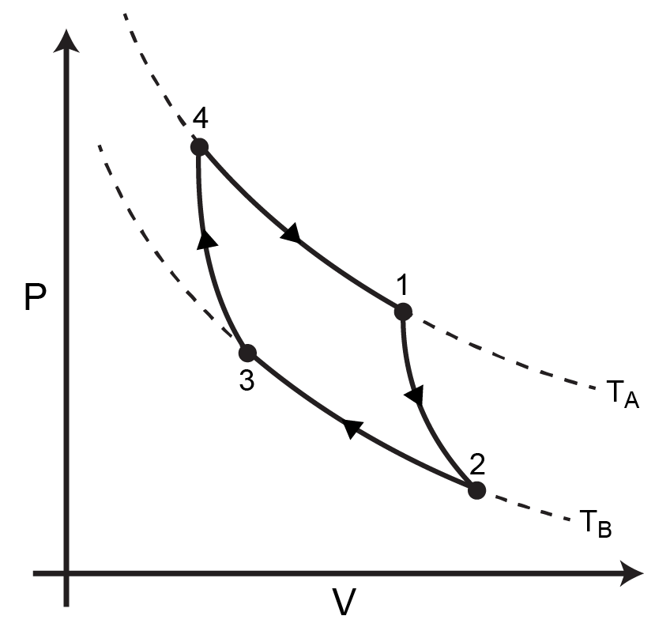

Problem Set 4 (Due Wednesday, November 22, 2023)#
Question 1: Carnot cycle#
The Carnot cycle consists of four processes as illustrated in the figure below:
An isothermal expansion from state (4) to (1)
An adiabatic expansion from state (1) to (2)
An isothermal compression from state (2) to (3)
An adiabatic compression from state (3) to (4)

The temperature of the high-temperature states (connected by the dashed isotherm) is \(T_A\) and the temperature of the low-temperature states is \(T_B\). The efficiency of a reversible heat engine performing the Carnot cycle with an ideal gas working fluid (i.e., the ideal gas is the system) is:
Here, \(\delta W_E\) is the total work done on/by the system during the cycle and \(\delta Q_A\) is the heat transferred at the “hot” temperature \(T_A\). In this problem, we will derive this expression for the efficiency by analyzing the various work and heat transfers during the cycle, without invoking the concept of entropy. Recall that for an ideal gas the following two equations are relevant:
where \(C_V\) is the heat capacity at constant volume that we assume to be independent of temperature.
(a)
Consider an ideal gas that changes between an arbitrary initial state \(i\) and a final state \(f\) along an isothermal path. Show that the heat transferred during the process is
\(\delta \underline{Q} = NRT \ln \frac{\underline{V}_f}{\underline{V}_i}\)
by explicitly computing the change in energy of the gas and the work done by the gas.
(b)
Show that for an ideal gas that changes between an arbitrary initial state \(i\) and final state \(f\) along an adiabatic path
where
(c)
For an ideal gas that changes between an arbitrary initial state (i) and final state (f) along an adiabatic path, show that the work done by the gas is
\(\delta \underline{W} = \frac{NR}{\gamma-1} \left ( T_f - T_i \right )\)
by explicitly computing the change in the energy of the gas and the heat transferred during the process.
(d)
Using your results from parts a to c, calculate the efficiency of the Carnot cycle to obtain the expected result from the problem statement.
Question 2: Heat transfer to isolated cylinders#
A cylinder with a radius of 0.5 m and closed at both ends is divided into two parts by a frictionless, insulated piston with negligible volume. The left side of the cylinder (cylinder A) and the right side of the cylinder (cylinder B) each contain 2 m\(^3\) of a monatomic ideal gas, initially held at different temperatures. The piston is adiabatic while the walls of the entire cylinder are adiabatic and rigid. Note that the heat capacity at constant volume of a monatomic ideal gas is given by \(C_V = \frac{3}{2}R\).

Both cylinder A and cylinder B are initially at equilibrium with the following conditions:
Cylinder A |
Cylinder B |
|
|---|---|---|
Volume |
2 m\(^3\) |
2 m\(^3\) |
Pressure |
1 atm |
1 atm |
Temperature |
500 K |
400 K |
The insulation of cylinder A is temporarily removed and heat is transferred to cylinder A without any in-flow of gas. The adiabatic walls of cylinder A are then restored and the cylinders are allowed to equilibrate. At equilibrium, it is found that the pressure of the gas in cylinder B is 2.0 atm. You will analyze the state of the gases in these cylinders after this process.
Hint: you may need to use relationships from Question 1.
(a)
What is the final temperature of the gas in cylinder B? Round to the nearest degree.
(b)
What is the final temperature of the gas in cylinder A? Round to the nearest degree.
(c)
How much work is done on the gas in cylinder B? Express your answer to the nearest kJ.
(d)
How much heat is added to the gas in cylinder A? Express your answer to the nearest kJ.
Question 3: Internal energy change of an arbitrary system#
For the following exercise, we will calculate the change in energy for an arbitrary system at \(P_1\), \(\underline{V}_1\) that we initially isochorically pressurize (in other words, increase the pressure of without changing the volume) to \(P'\), then allow to equilibrate at a new volume \(\underline{V}_2\) and pressure \(P_2\). To do so, we need the following relations.
When the system changes from a state with volume \(\underline{V}_1\) and pressure \(P_1\) to a state with volume \(\underline{V}_1\) and pressure \(P'\) along an isochoric (constant volume) path, the heat transferred to the system is:
where \(A>0\) is a constant.
Along any reversible, adiabatic path:
Question
Write an expression for the change in the internal energy given by:
Express your answer in terms of \(P_2\), \(\underline{V}_2\), \(P_1\), \(\underline{V}_1\), and \(A\). Draw diagrams to indicate any paths through the \(P-\underline{V}\) plane that you define.